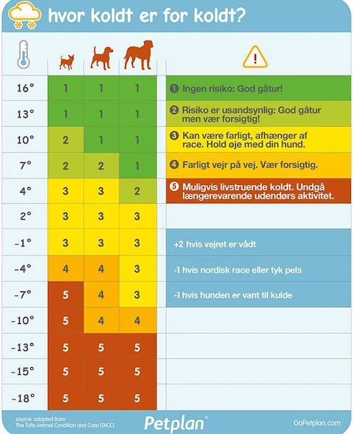

Tilskud, tøj og udstyr
Hvorfor tilskud?
For at give din hund de bedste vilkår for et langt og godt hundeliv, kan tilskud være en fordelagtig løsning.
Ligesom mennesker har flere hunde bruf for ekstra næringsstoffer og vitaminer, eller andre tilskud, ud over det, der er tilgængeligt i deres daglige foder.
Tilskud til din hund
Anti-stress: Har du brug for noget til at hjælpe din hund gennem et stressende og højlydt nytår, selskab eller til transportture? - Kom forbi butikken og se vores anti-stress udvalg.
Potevoks/creme: Har du noget til at beskytte og pleje din hunds poter fra sne, slud og salt? - Se vores udvalg i butikken af fugtgivende cremer m.m. til din hunds poter.
Shampoo: Vidste du at din hunds ph-værdi er lavere end menneskers og at hundens hud derfor ikke har godt af menneske shampoo? - Find den shampoo som passer til lige DIN hund.
Boost: Trænger din hund til et boost af vitaminer, olier eller andet? - Vi produkter som styrker hundens imunforsvar, mobilitet, giver god ånd, giver blød og skinnende pels og meget mere.
Tøj
Fryser din hund også?
Tidligere var det en normalt at tro at hundens pels er nok i den kolde efterårs- og vintervejr, men det er langt fra sandt.
Mange hunde har brug for en jakke eller sweater i det kolde vejr. Især små hunde, hunde uden underuld, hunde med kort eller tynd pels og hunde med sundshedsproblemer. En ting er helt sikkert - det vil aldrig skade at give din hund jakke på.
Om din hund har brug for en sweater, en jakke eller et regnslag, så har vi det.
